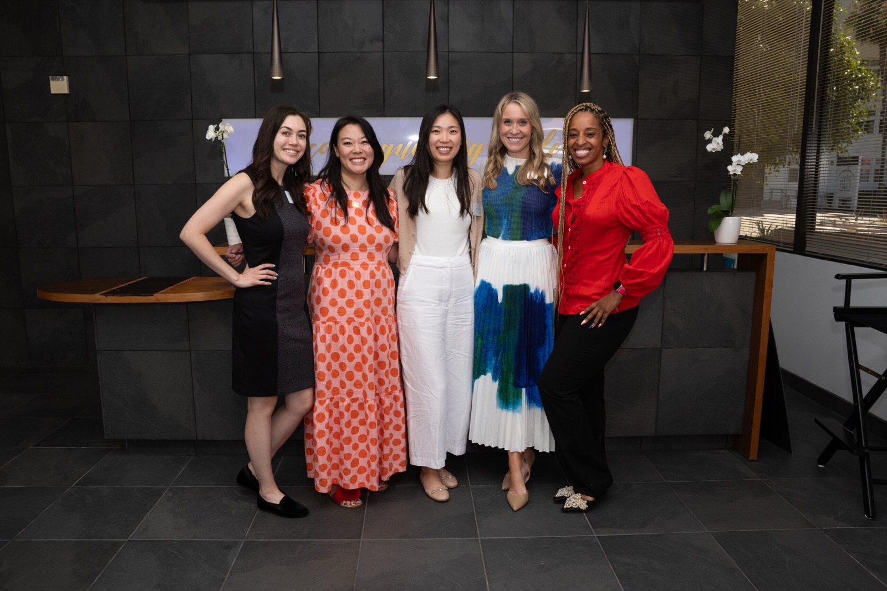
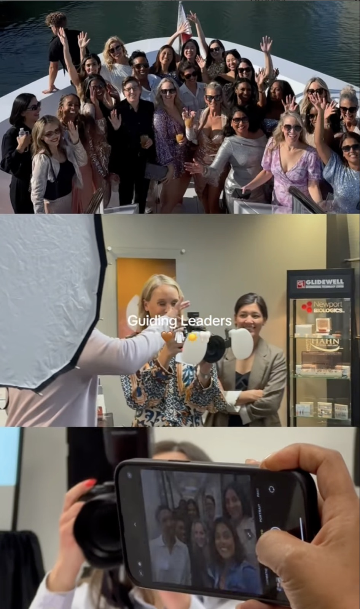
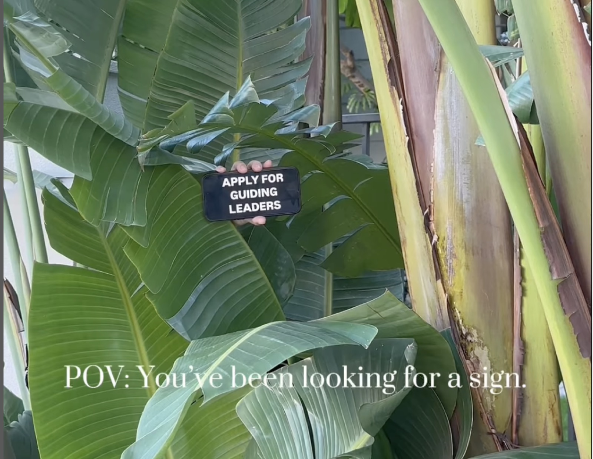
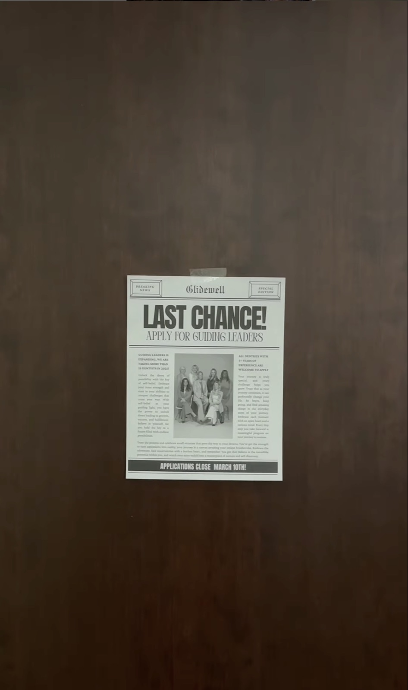
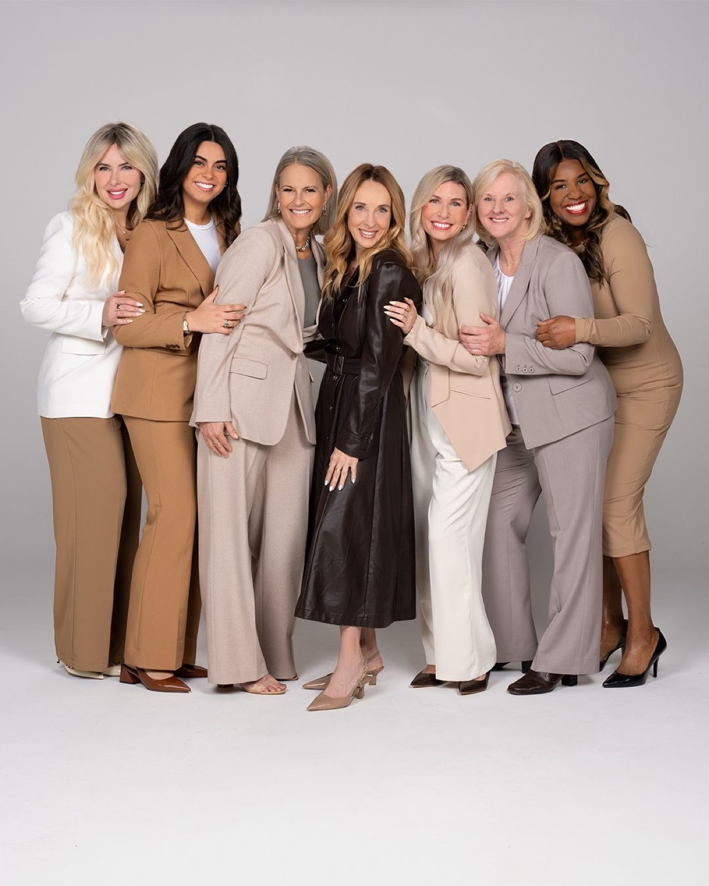
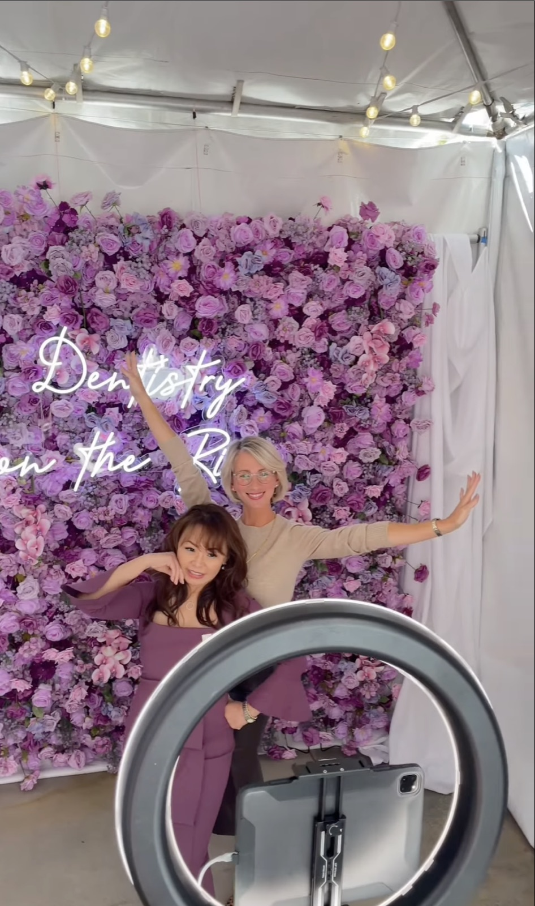
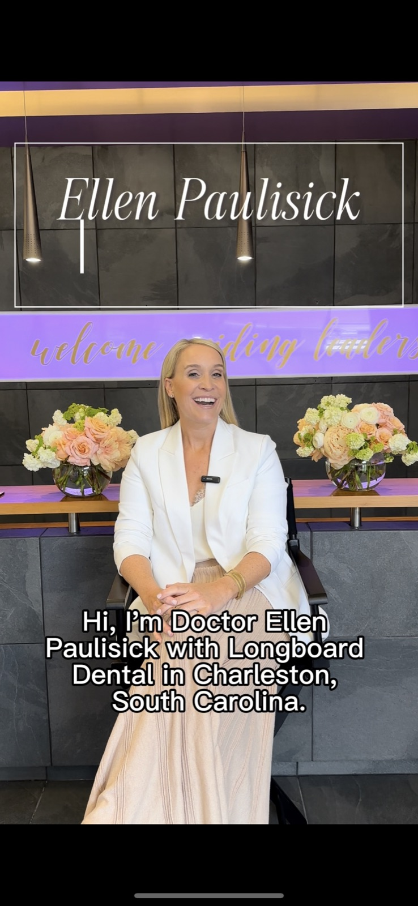

Case Study 03
Guiding Leaders
I manage and create content for Guiding Leaders across multiple social media platforms to extend the sense of community cultivated on Glidewell’s campus into the digital space. Through strategic planning, content ideation, and production, I deliver a dynamic and engaging online experience that connects, supports, and grows our community of dental professionals.

Project summary
Five pillars, one community
I’ve led and contributed to a variety of campaigns designed to grow the program’s visibility and engagement. My content strategy centers around five key pillars: Trends, Application and Interest Form promotions, Evergreen content, Events, and Testimonials. Each pillar plays a role in fostering community, driving awareness, and supporting program goals.
During my time with Guiding Leaders, I’ve increased applications through organic social content by 10% compared to the previous year, driven strong interest form sign-ups, maintained a 14-hour average community response time, and created the most engaged-with post in Guiding Leaders history.
About the program
About Guiding Leaders
Guiding Leaders is a premier business development and leadership program designed for dentists with five or more years of clinical experience. The program cultivates a supportive community of practitioners committed to elevating their practices through education, mentorship, and personal growth. Many alumni go on to become Key Opinion Leaders, public speakers, and successful business owners.
My work focused on expanding the program’s digital presence through strategic social media campaigns, content creation, and community engagement to drive awareness, participation, and long-term brand loyalty.

Tools
- Sprinklr
- Workfront
- Microsoft Office
- Canva
- CapCut
Platforms
My role
Social Media Strategist
- Project management
- Manage social media accounts
- Community management and engagement
- Content strategy and content creation
- Create monthly content calendars and planning sheets
- Facilitate monthly meetings
The process
I host monthly content calendar meetings with key team members to align on upcoming social media initiatives for Guiding Leaders. In these meetings, we review content priorities, coordinate video production needs, provide copywriting guidance, and refine the overall marketing strategy to ensure consistent messaging and effective execution across platforms.
Trends
When sourcing trends for social media, I analyze both general trending content and niche trends that resonate specifically with our target audience. Because dentistry has a distinct and tight-knit culture, it’s essential to lean into that identity to create content that feels authentic and makes our audience feel seen, understood, and engaged.

Applications
Year over year, Guiding Leaders has experienced a steady increase in applications, with the application window running from January through March. Historically, the program used paid social media advertising to expand its reach and attract potential applicants. In 2025, however, Guiding Leaders shifted to an organic-only social media strategy for the first time. Despite this change, the campaign saw strong engagement.


Interest form
The Guiding Leaders interest form opens immediately following the close of the application period, running from mid-March through December. During both the application and interest form seasons, I leveraged timely trends and strategic content to capture attention, drive engagement, and encourage alumni to share and interact with posts.
Evergreen
Evergreen content is designed to build brand loyalty and trust over time. For Guiding Leaders, this includes behind-the-scenes glimpses into the experiences of the committee and alumni.
Sharing this type of content consistently strengthens the connection between the brand and its audience, particularly prospective participants and alumni, by offering an authentic, relatable view into the community at the heart of the program.

Events
Event content primarily features highlights from Guiding Leaders courses and the Glidewell Symposium: Dentistry on the Rise (DOTR). Occasionally, we also showcase other events attended by alumni to maintain ongoing engagement.
These posts are crafted to spark interest and create a sense of FOMO among potential applicants, encouraging them to apply in the next cycle, while also evoking nostalgia and pride among alumni—strengthening their continued connection to the program.

Testimonials
Testimonials are filmed when Guiding Leaders participants are on campus, whether they’re attending a Glidewell event or participating in program courses.
These authentic, first-hand accounts are strategically shared throughout the year to build credibility, showcase the impact of the program, and inspire future applicants by highlighting the real experiences and successes of current and past participants.

Growth
Growth across every key metric
Since joining the Guiding Leaders team, I’ve helped drive consistent growth across all key performance indicators. We tracked follower count, volume of published messages, post reach, total engagements, shares, comments, engagement rate, and impressions.
The slight decline in reach aligns with the discontinuation of paid boosting in Q3 2024, which had previously amplified visibility for the accounts. Despite that, strong gains in organic engagement and impressions highlight the effectiveness of our content strategy and the strength of our online community.
Reflection
Working on Guiding Leaders has been a key part of my growth as a marketer.
I led a multi-channel social media strategy focused on five core content pillars: evergreen, trends, events, testimonials, and applications. In 2025, we shifted entirely to organic social, and I helped drive 30% of applicants through that content alone, showcasing the power of authentic, community-driven storytelling.
I tailored content to the dental field’s unique culture, using trends to spark interest and build a genuine connection with both prospective applicants and alumni. I also led monthly planning meetings to align creative direction, production, and messaging across teams.
This experience sharpened my skills in strategic planning, content development, and community engagement, while reinforcing the impact of thoughtful storytelling and niche audience connection in driving real results.